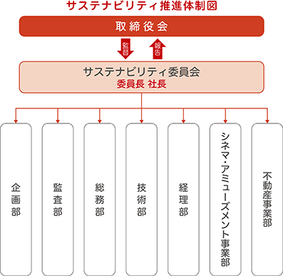

文中の将来に関する事項は、当事業年度末現在において当社が判断したものであります。
当社は、映画興行、ビル賃貸及び付帯事業並びに娯楽場の経営を主たる事業としており、お客様の立場に立った高度のサービスを提供し豊かな生活文化に貢献するとともに、地域の発展に寄与できる街づくりを積極的に推進いたしております。また、経営環境の急激な変化に機敏に対応し、安定的な経営基盤の確立と業容の一層の拡大に全力を傾けてまいります。
当社は効率的な経営を推進するため、部門別業績管理の徹底を図り、利益率の向上に努めてまいりましたが、引き続き収益性の指標となるＲＯＡ（総資産経常利益率）及び営業利益率に対する関心を一層強めるとともに、キャッシュ・フローの向上及び借入金の圧縮等、財務体質の強化を進めてまいります。
主軸である劇場事業を今後も継続・発展させていくために、お客様が安心・快適に映画鑑賞できる環境を整備するとともに、あべの・天王寺エリア唯一の映画館として周辺の大規模集客施設と連携することにより、他のエリアの映画館にはない相乗効果を醸成し、思う存分映画を楽しみたいお客様が訪れたくなる劇場事業を展開してまいります。さらに、セグメント利益の拡大に向けて諸経費を抑制し、損益分岐点を引き下げてまいります。
また、収益的に不確実性が伴う映画興行を持続的に運営していくには、会社の経営基盤の強化が不可欠であり、不動産賃貸事業の収支の安定化を図ることが重要であります。そのために、経営環境の変化に対して適応力が高いテナントの見極めと周辺の大規模集客施設と共存共栄できるテナント構成の追求、ビル管理コストの低減等に努めてまいります。
今後につきましては、シネマ・アミューズメント事業部門では、あべの・天王寺エリア唯一の映画館「あべのアポロシネマ」への一層の誘客を目指し、顧客満足度の高い作品の上映に努めるとともに、安心、快適な環境で映画を楽しんでいただけますよう計画的な設備の更新に取り組んでまいります。また、「あべのハルカス」「あべのキューズモール」「天王寺ミオ」など周辺諸施設との共同販売促進策を一層推進するとともに、簡単・便利な「チケット予約システム」、格安で映画をご覧いただける映画会員制度「アポロシネマメンバーズ」をアピールし、誘客に努めます。
不動産事業部門におきましては、テナント入居率の維持・向上による賃貸収入の確保を図ることはもとより、照明設備のＬＥＤ化等により積極的に省エネルギーに取り組むほか、引き続き設備更新・改良工事等を計画的に進めるなど、ビルのさらなる機能向上を図り、安全で快適な環境づくりに努めます。加えて、「あべのアポロシネマ」との連携を推進し、顧客誘致に全力で取り組むことにより、あべの・天王寺エリアの賑わいの創出を図るとともに、安定した経営基盤の確立並びに事業の発展に格段の努力を傾けてまいります。
当社のサステナビリティに関する考え方及び取組は、次のとおりであります。
なお、文中の将来に関する事項は、当事業年度末現在において当社が判断したものであります。
当社は、お客様、地域社会、株主、取引先、従業員等のステークホルダーの皆様との信頼関係を築き、長期的な視点での社会課題の解決と企業価値の向上を図るための機関としてサステナビリティ委員会を設置しております。
サステナビリティ委員会は、当社社長を委員長として、サステナビリティ方針に則り重要テーマを設定し、サステナビリティを巡る諸課題への取り組み等を検討、推進しております。
取締役会は、サステナビリティの視点も含めて、リスクに対応する重要案件について必要に応じて審議するとともに、サステナビリティ委員会からの報告を受け、サステナビリティ方針や重要テーマ等について確認・監督を行っております。
サステナビリティ委員会は、当事業年度において３回開催し、サステナビリティ方針（案）の策定、重要テーマの特定、当社事業活動における具体的な取り組みの現状についての確認を実施いたしました。それに基づき、取締役会において、「きんえいサステナビリティ方針」の策定を決議し、同委員会から活動状況について報告しております。

当社は、「映画興行とビル経営の事業活動を通じて、企業価値の向上に取り組むとともに、将来にわたって持続可能な社会の実現に貢献してまいります。」をサステナビリティ方針とし、本方針のもと、事業を通じて企業価値の向上に取り組むとともに持続可能な社会の実現に貢献するため、サステナビリティ推進体制を固め、重要テーマに則った具体的な取り組みを充実させてまいります。
重要テーマとその具体的な取り組みについては、以下を掲げております。
また、当社事業に大きな影響を及ぼしかねないサステナビリティ関連のリスクとして、大規模災害が発生することによって保有資産及び管理物件へ甚大な被害が生じるなどの気候変動リスクを認識しております。当該リスクについては、「３ 事業等のリスク (9)大規模災害、大規模事故の発生 (10)気候変動の影響」に具体的に記載しているとおり、各種防災対策及び危機管理体制の強化に努めております。
当社では、サステナビリティ委員会によるガバナンス体制の活用により、事業全般のサステナビリティに関するリスクの発生の可能性と事業経営への影響等を検討し、サステナビリティに関する取り組みを推進しております。また、同委員会から活動状況等について適宜取締役会に報告しております。
なお、建物・設備に関するリスクについては、当社事業への影響度に鑑みサステナビリティ委員会とは別組織であるビル建物・設備リスク管理委員会を設置し、当該リスク管理を行っております。技術部担当執行役員を委員長としたビル建物・設備リスク管理委員会を毎月開催し、施設関連のリスクを適正に管理することで、安全性、快適性の確保とともに、建物資産の健全な維持保全に努めております。万一、事故が発生した場合には、その原因を、設備上の問題に留まらず、ヒューマンエラーまで掘り下げることにより、再発防止策を講じるように努めております。
人権に関わるリスクについては、下記の（5）①をご参照ください。
あべのアポロシネマでは「私たちは、お客様にとっていごこちのよい、また来たくなる映画館を提供します。」をミッションとして掲げ、従業員の接遇力の向上、顧客満足度の高い作品の上映、安心・快適な設備と環境で映画を楽しんでいただくことに取り組むとともに、簡単便利な「チケット予約システム」、映画会員制度「アポロシネマメンバーズ」など魅力の発信に努めております。さらに、きんえいアポロビル・あべのルシアスをはじめとし、近隣商業施設等と連携し、映画をテーマとしたタイアップイベントを実施するなど、お客様が「あべの」で楽しく過ごしていただけるような取り組みに力を入れております。
また、「あべの天王寺・サマーキャンパス」や「ＡＢＥＴＥＮ ＳＴＲＥＥＴ ＢＵＴＴＥＲＦＬＹ」等の地域振興、賑わい創出を目的としたイベントや「放置自転車対策」、「違法広告物対策」及び「ごみのポイ捨て防止」等、まちの美化に向けた取り組みに積極的に参加しております。
省エネルギーについては、コージェネレーションシステムによる廃熱利用等による効率的なエネルギー運用、空調機器やＬＥＤ照明等、高効率機器への計画的な更新に取り組むことにより、エネルギー原単位の１％以上（５年度平均）の改善を目標（令和５年実績3.5％改善）としております。また、温室効果ガス排出削減については、平成25年（基準年）比で、令和12年に19％以上の削減を目標としております。
前記のビル建物・設備リスク管理委員会の活動により、施設を利用される従業員、テナント、お客様の安全性向上に努めているほか、防災への取り組みとして、各種マニュアルの整備や大地震に備えた消火、避難訓練などを年２回実施しております。
当社は働きがいのある職場づくりと人材の成長を重要テーマとしており、下記の取り組みを行っております。
人権の尊重：
当社は「きんえい倫理規定」において、人権の尊重及び性別、国籍、経歴、宗教、信条、出身地等の属性を理由として差別や不利な扱い、ハラスメント等を受けない健全な職場環境の確保を定め、人権に対する意識を高めるなど、人権の尊重を行動の規範としております。また、人権に関わるリスクに対して、社内に法令倫理委員会を設置するとともに、社外に内部通報窓口を設けるなどの取り組みを行っております。
中途採用者の活躍：
当社は多様な専門性を有する人材の採用に力を入れております。人材登用につきましては、客観的で公正な人事評価を行い、経歴等に関係なく、能力や見識に応じた登用を行っております。現在、中途採用者が管理職に占める割合は約半数で推移しております。
女性活躍の推進：
当社では「きんえい倫理規定」において成果・業績主義に基づく客観的で公正な人事評価を行い性別その他の属性に関係なく能力や見識に応じた人材登用等を行うことを定めております。
シニア人材の活用：
当社では、60歳定年を迎える従業員が希望する場合、原則として65歳まで再雇用する制度を運用しております。シニア人材は、その知見、経験、スキルを活かして活躍するだけでなく、蓄積したノウハウを次世代に継承することに貢献しております。
資格取得奨励制度：
社員の自己啓発の奨励及び知識、技能の習得による成長を促すために、資格取得奨励制度を整備し、宅地建物取引士など対象とする58種類の資格について、それを取得した場合には、奨励金のほか、受験費用等を支給しております。
各種研修の実施：
全従業員を対象とし、個人情報保護法などの法令への理解促進、ハラスメント防止などを目的としたコンプライアンス研修を年１回以上実施するほか、顧客満足度を高めるための接遇力向上研修などを実施しております。
③ 働き方改革の各種制度の運用
多様な働き方の実現と有給休暇の取得促進を目的として、半日単位で有給休暇を取得できる制度を運用しております。また、仕事と生活のバランスを保ちながら個々の事情に応じて働くことができるように育児・介護支援制度を整備しております。
④ 健康経営への取り組み
身体の健康に関する取り組みとして、定期健康診断やインフルエンザ予防接種を実施しております。また、メンタルヘルスに関する取り組みとして、従業員（一部のアルバイトスタッフを含む）を対象にストレスチェックを実施しております。
当社では、上記「(5) 人材の育成及び社内環境整備に関する方針」において記載した人材の育成に関する方針及び社内環境整備に関する方針について、次の指標を用いております。当該指標に関する目標及び実績は、次のとおりであります。
「第２ 事業の状況」「第５ 経理の状況」等に関する事項のうち、経営者が当社の財政状態、経営成績及びキャッシュ・フローの状況に重要な影響を与える可能性があると認識している主要なリスクは、以下のようなものがあります。
当社は、これらのリスクの発生の可能性を認識した上で、発生の回避及び発生した場合の対応に努めております。
なお、文中における将来に関する事項は、本有価証券報告書提出日現在において、当社が判断したものであります。
(1) 映画興行の成績
映画興行の成績は、作品による差異が大きく、各作品の興行収入を予想することは常に困難を伴います。一定の成績に達しない作品が続いた場合には、当社の業績に影響を及ぼす可能性があります。また、競合エリアに映画館が出店した場合、一定数の顧客が競合館に流出するおそれがあります。
当社としては、できる限り厳密な興行収入の予測を立てるとともに、大手配給会社と契約し、ヒットする可能性の高い作品を上映できる仕組みの構築に努めております。それらのヒットが見込める作品のＰＲに力を入れるとともに、上映スケジュールも弾力的に編成し、最大限の興行収入が得られるよう努力してまいります。
(2) 賃貸ビルの稼働状況等
賃貸ビル市場は、景気動向等により、既存賃貸ビルの賃料低下や空室率の上昇といった問題が生じ、賃料収入が減少する可能性があります。また、当社テナント店舗の営業エリアにおいて、同種の商品・サービスを提供する他施設の店舗との競合により、テナントの売上が減少し、ひいてはテナントが退去するおそれがあります。
当社としては、適切な投資計画の実行によりビル機能を維持・向上させるとともに、ビル管理経費の節減を図る一方、賃料については相場に応じた適正化を進めてまいります。また、テナント店舗と他施設店舗との競合については、当社ビルの広告・宣伝を強化し、テナントとの共同キャンペーンを開催するなど販売促進を支援する一方、他施設と共存共栄できるテナント構成を目指しております。
(3) 固定資産の減損会計適用の影響
今後、当社保有資産において、興行収入や賃料等の減少、地価の大幅な下落、使用目的の変更等により減損損失が発生し、当社の業績に影響を及ぼす可能性があります。
当社としては、収益の確保に全力を傾けるとともに、周到な事業計画の策定を通じて、減損損失発生の回避に努めてまいります。
(4) 情報システムの管理
高度な不正アクセス等により重要な営業情報や財務情報等の破壊・流出が発生し、業務への支障や停滞を招くほか、信用失墜等による売上高の減少等が当社の業績に影響を及ぼす可能性があります。
当社としては、情報システムのハード・ソフトの適切な管理、ファイアウォールやウイルス対策ソフト等の導入、ＩＴ統制、社員教育等により、不正アクセス等の防止を図るとともに、万一発生した場合に備え、データ等のバックアップ、迅速・適切な対応をとれる体制の整備等により、リスクの軽減に努めてまいります。
(5) 個人情報の管理
シネマ会員情報、顧客情報、株主情報等多くの個人情報を保有しており、システム上のトラブルや高度な不正アクセス、不適切な取扱い等により、情報漏洩が起こる可能性があり、万一、漏洩が発生した場合には、被害者に対する損害賠償や信用失墜に伴う売上高の減少等が当社の業績に影響を及ぼす可能性があります。
当社としては、情報システムへの外部からの不正アクセス等を防ぐため、専用ソフト等によるセキュリティ対策を講じているほか、個人情報の取扱いについては、取得、利用、保管等について社内ルールを設け、個人情報管理委員会を設置して管理状況を監視しております。さらに、定期的な研修会を通じて、必要以上の個人情報を取得しないなど個人情報保護に関する従業員の意識を高め、漏洩防止に努めております。
(6) 法令の改正
建築基準法、消防法、ビル衛生管理法、省エネルギー法等建物管理に関する法令並びに興行場法等その他の法令の規制を受けております。これら諸法令は、常に政策目標によって改正される可能性があり、今後、特に環境政策に沿った新たな法令改正等も予想されます。その場合、改正内容によっては、追加的な改修工事の必要性やビル管理費の増加を招くことがあります。
当社としては、法令に関する情報収集に努め、改正の動きが見られるときは適切な対応を検討するとともに、法令遵守を徹底するため、社内研修や内部監査を実施しております。
(7) 大規模感染症の影響
大規模感染症が発生した場合、臨時休館や間隔を空けた座席販売、上映予定作品の公開延期、空室率の急激な上昇と空室期間の長期化、賃料収入の減少など、大幅な業績悪化を招くおそれがあります。
当社としては、コロナ禍において徹底した感染拡大予防策に取り組んだ経験を生かして、大規模感染症に対するリスクの軽減に努めてまいります。また、アポロビル及びルシアスビルにおいて経営環境の変化に対して適応力が高いテナント構成への見直しを進めてまいります。
(8) 食品衛生上の問題の発生
当社は、「あべのアポロシネマ」の売店において飲物、軽食、菓子等を販売しており、これらの食品から食中毒が発生した場合、損害賠償や慰謝に費用を要するほか、信用失墜による売上減少により、業績に影響が出るおそれがあります。
当社としては、ＨＡＣＣＡＰに沿った衛生管理体制を整えるとともに、従業員に対し食品衛生に関する教育を徹底し、食中毒の未然防止に万全を期しております。
(9) 大規模災害、大規模事故の発生
当社の所在する地域において、東南海・南海地震と津波、上町断層の直下型地震のリスクが予想されており、当社保有資産及び管理物件に甚大な被害を受ける可能性があります。当社の事業拠点があべの１ヵ所に集中していることから、被災状況によっては、経営上の深刻な危機に発展するおそれがあります。また、当社保有資産及び管理物件において、火災やテロが発生し、規模によっては大きな損害が生じる可能性があります。
当社としては、アポロビルの耐震補強工事を平成31年１月に完了しているほか、地震対策マニュアルを整備するなど地震及び津波に備えた防災対策を推進しております。さらに、定期的に防火・防災訓練を実施するなど危機管理体制の強化に努めており、お客様の安全の確保を第一に考え、災害や事故の被害を最小限に留めるための安全対策を講じております。
(10) 気候変動の影響
近年の気候変動の影響を受け、大型台風や豪雨による風水害の発生リスクが高まっています。それらによる建物の破損、浸水等で施設に損害が生じるおそれがあり、業務への支障や停滞を招くことが想定されます。また、猛暑等の異常気象により空調に使用するエネルギーコストが嵩むおそれがあるほか、法令改正等による規制強化が実施されると、大規模な設備投資が必要となる可能性があります。
当社としては、風水害については、起こり得る被害を想定し、随時建物の整備や対策工事を実施しているほか、エネルギーコストの増大については、設備機器の効率的運用等によりその削減を図るとともに、国や自治体の方針に沿った環境目標を策定し、ＣＯ２削減や省エネルギーに向けて、空調機更新等の設備投資を計画的に実施しております。
(11) エネルギーコストの上昇
国内外の情勢変化に起因する電気料金等のエネルギーコストの上昇は、当社の利益減少の要因となります。
当社としては、供給会社との価格交渉を行うとともに、ビル空調機器の計画的な更新や照明器具のＬＥＤ化等による省エネルギー化を進め、費用の抑制に努めております。
当事業年度におけるわが国経済は、緩やかな回復基調にあり、企業収益は総じて改善し、個人消費は持ち直しの動きがみられました。一方で、景気の先行きについては、世界的な金融引締めの影響等による海外経済の下振れが国内の景気を下押しするリスクになりうるほか、物価上昇や海外情勢、金融資本市場の変動等が経済に与える影響等が懸念されます。
この間、当社におきましては、事業全般に亘って顧客満足度の高いサービスの提供に努めるとともに、部門別業績管理のさらなる徹底を図りましたところ、売上高は、前期と比較して6.8％増の3,570,520千円となりました。さらに、経費全般に亘って鋭意抑制に努めました結果、営業利益は前期に比較して46.3％増の255,771千円、経常利益は38.5％増の254,382千円、当期純利益は24.3％増の154,948千円となりました。
各セグメントの状況は次のとおりであります。
シネマ・アミューズメント事業部門におきましては、劇場事業では、“名探偵コナン 黒鉄の魚影”“ザ・スーパーマリオブラザーズ・ムービー”“君たちはどう生きるか”“あの花が咲く丘で、君とまた出会えたら。”“ミステリと言う勿れ”“劇場版 ＳＰＹ×ＦＡＭＩＬＹ ＣＯＤＥ：Ｗｈｉｔｅ”“キングダム 運命の炎”“ＴＨＥ ＦＩＲＳＴ ＳＬＡＭ ＤＵＮＫ”“映画ドラえもん のび太と空の理想郷”“劇場版『ＴＯＫＹＯ ＭＥＲ～走る緊急救命室～』”などを上映し、観客誘致に努めました。また、「あべのハルカス」「あべのキューズモール」「天王寺ミオ」等の周辺施設と連携し、積極的な販売促進を図るとともに、フード売店の販売強化にも注力しました。その上で、スクリーン４・５・６の空調機部分更新工事を実施するとともに、スクリーン２・４の座席をリニューアル、スクリーン６においてカスタムオーダーメイドスピーカーを導入する等、より快適な鑑賞環境の整備に努めました。また、娯楽場事業におきましても、劇場と一体となった集客に努めました結果、部門全体の収入合計は、1,555,194千円（前期比16.8％増）となり、営業原価控除後では126,410千円（前期比130.0％増）の営業利益となりました。
同事業の収入等は次のとおりであります。
ｂ．不動産事業
不動産事業部門におきましては、アポロビルにおいて、空調機、空調用ポンプ及び防火シャッターの更新、トイレ改修、冷却塔整備等の諸工事を実施し、ビルの安全性、快適性の向上及び省エネルギー化に努めました。ルシアスビルにおいても、空調機器、受変電設備機器等の更新、防火シャッター等の安全設備の改修等に計画的に取り組むなど、より安全で快適なビルづくりを推進しました。また、テナント退去区画の整備工事に取り組む等、後継テナント誘致に注力し、収入の確保に努めました。これらの結果、駐車場等ビル付帯事業並びにその他の事業を含めた部門全体の収入合計は2,015,325千円（前期比0.1％増）となり、営業原価控除後では430,076千円の営業利益（前期比5.0％増）となりました。
同事業の収入等は次のとおりであります。
当事業年度末における資産は、前事業年度末に比較して101,695千円増加し、5,867,556千円となりました。これは短期貸付金の増加69,019千円等によるものであります。また、負債は前事業年度末に比較して28,456千円減少し、3,417,852千円となりました。これは長期借入金の減少75,000千円等によるものであります。純資産につきましては、当期純利益の計上額が支払配当額を上回ったため、前事業年度末に比較して130,152千円増加し、2,449,703千円となりました。
当事業年度末における現金及び現金同等物（以下「資金」という）は、営業活動による収入が投資活動及び財務活動による支出を下回ったため、前事業年度末に比較して374千円減少し、当事業年度末は75,248千円となりました。
また、当期中における各キャッシュ・フローは次のとおりであります。
（営業活動によるキャッシュ・フロー）
当事業年度において営業活動で得られた資金は、税引前当期純利益の計上及び減価償却費等により463,038千円となりました。前事業年度と比較しますと、未払金の減少等により46,914千円収入額が減少しております。
（投資活動によるキャッシュ・フロー）
当事業年度において投資活動で使用した資金は、固定資産の取得等により359,869千円となりました。前事業年度と比較しますと、有形固定資産の取得による支出の増加等により44,524千円支出額が増加しております。
（財務活動によるキャッシュ・フロー）
当事業年度において財務活動で使用した資金は、長期借入金の返済等により103,542千円となりました。前事業年度と比較しますと、99,966千円支出額が減少しております。
当社は、受注生産形態をとる事業を行っていないため、セグメントごとに生産規模及び受注規模を金額及び数量で示す記載をしておりません。
このため、販売の実績については、「①財政状態及び経営成績の状況」における各セグメントの業績に関連付けて記載しております。
(2) 経営者の視点による経営成績等の状況に関する分析・検討内容
経営者の視点による当社の経営成績等の状況に関する認識及び分析・検討内容は次のとおりであります。
なお、文中の将来に関する事項は、当事業年度末現在において判断したものであります。
当社の財務諸表は、わが国において一般に公正妥当と認められる会計基準に基づき作成しております。この作成にあたり、過去の実績や現在の状況等に応じた合理的な判断に基づき仮定及び見積りを行っております。これらのうち主なものは以下のとおりでありますが、見積り特有の不確実性があるため、実際の結果と異なる場合があります。
ａ．固定資産の減損
当社は、固定資産を劇場事業、不動産賃貸事業、その他の事業にグルーピングした上で、その回収可能価額について将来キャッシュ・フロー、正味売却価額等の前提条件に基づき見積っております。従って、当初見込んでいた収益が得られなかった場合や、将来キャッシュ・フローなどの前提条件に変更があった場合、固定資産の減損損失が発生する可能性があります。
ｂ．繰延税金資産の回収可能性
当社は、繰延税金資産の回収可能性を判断するに際して、将来の課税所得を合理的に見積り、将来減算一時差異のうち将来課税所得を減算できる可能性が高いものについて繰延税金資産を計上しております。従って、今後、経営環境の変化等により将来の課税所得の見積額が大きく変動した場合等には繰延税金資産の計上額が変動する可能性があります。
（経営環境の変化）
当社の事業拠点であるあべの・天王寺エリアでは、「あべのハルカス」や「あべのキューズモール」等の大型施設の集積により街の魅力が高まるとともに来訪者が増加し、当社におきましても、これらに合わせて営業強化に取組んでまいりました。
シネマ・アミューズメント事業部門では、あべの・天王寺エリア唯一の映画館である「あべのアポロシネマ」への一層の誘客を目指し、「あべのハルカス」「あべのキューズモール」「天王寺ミオ」などの周辺施設と共同イベントを実施しております。同時に、映画会員制度「アポロシネマメンバーズ」会員の獲得に努め、会員向けのメールマガジンを通じて顧客とのコミュニケーションを深めるとともに、事前のクレジットカード決済が不要なチケット予約システムの利便性を訴えること等により、誘客に努めてまいりました。
また、不動産事業部門では、安全で快適なビル環境を目指して計画的に設備更新・改良工事を進めております。
当社といたしましては、今後ともお客様の視点に立った質の高いサービスの提供、安全・快適な環境の整備を推進するとともに、シネマ・アミューズメント事業と不動産事業との有機的な連携による販売活動を展開してまいります。また、地域間競争に生き残るためにも、あべの・天王寺エリアの魅力を更に高める周辺施設とのタイアップを引き続き推進し、これらの相乗効果により経営成績の向上を目指してまいります。
（経営成績に重要な影響を与える要因）
当社の経営成績に重要な影響を与える要因につきましては、「３ 事業等のリスク」に記載しております。
このうち、当事業年度において特に留意すべき要因についての分析としては、エネルギーコストの上昇による劇場事業及び不動産賃貸事業における利益への影響が挙げられます。
（経営成績等の分析・検討）
経営成績に重要な影響を与える要因を踏まえた当事業年度の経営成績の状況に関する分析は次のとおりであります。
ａ．売上高及び営業利益
当事業年度は、事業全般に亘って顧客満足度の高いサービスの提供に努めるとともに、部門別業績管理のさらなる徹底を図りました。
シネマ・アミューズメント事業では、数多くの人気作品を上映し、観客誘致に努めました。また、周辺施設と連携し、積極的な販売促進を図るとともに、フード売店の販売強化にも注力しました。その上で、空調機部分更新工事を実施するとともに、一部座席のリニューアルやカスタムオーダーメイドスピーカーの導入など、より快適な鑑賞環境の整備に努めました。また、娯楽場事業におきましても劇場と一体となった集客に努めました。
不動産事業では、空調機器の更新工事やトイレ改修工事をはじめ、ビルの安全性、快適性の向上に計画的に取り組みました。また、テナント退去区画の整備工事に取り組むなど後継テナント誘致に注力し、収入の確保に努めました。
これらの結果、売上高は前期に比較して6.8％増の3,570,520千円となり、営業利益は前期に比較して46.3％増の255,771千円となりました。
ｂ．経常利益
経常利益は、前期に比較して38.5％増の254,382千円となりました。
ｃ．当期純利益
当期純利益は、固定資産除却損を特別損失に計上したこともあり、前期に比較して24.3％増の154,948千円となりました。
（経営上の目標の達成状況を判断するための客観的な指標）
当事業年度のＲＯＡ（総資産経常利益率）は4.4％（前事業年度は3.2％）、営業利益率は7.2％（前事業年度は5.2％）であります。当事業年度において、ＲＯＡ及び営業利益率が前事業年度に比べていずれも改善したのは、主にシネマ・アミューズメント事業部門の業績が順調に推移したことにより、前期に比べて利益が増加したためであり、今後もさらなる改善に努めてまいります。
当社の資金需要の主なものは、映画フィルム料、商品仕入れ、「あべのルシアス」に係る大阪市との「保留床一括賃貸借契約」に基づく不動産賃借料等の各事業運転資金及び一般管理費のほか、維持更新投資等に関する設備資金であります。
これらの資金需要に対応するため、短期資金については各事業が生み出す営業キャッシュ・フローに加え、当座貸越枠を設定した金融機関からの借入れにより流動性を確保しております。長期資金については金融機関から固定金利で調達することにより金利上昇リスクに対応するとともに年度別返済額の平準化を図っております。
また、金融機関の当座貸越枠を設定し、資金の流動性の確保に万全を期しております。
なお、余剰資金は、親会社である近鉄グループホールディングス株式会社のキャッシュマネジメントシステムに預け入れております。
当社は、大阪市が「あべのルシアス」内に所有する保留床(28,600㎡)を一括賃借し、賃貸・運営管理業務を行うため、大阪市との間で「保留床一括賃貸借契約」(賃貸借期間：平成10年12月２日から満20ヵ年 以降３年ごとの自動更新)を締結しております。
特記事項はありません。